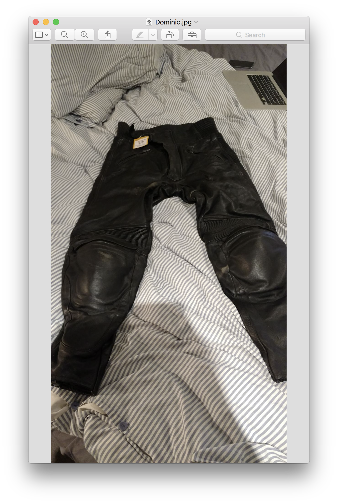
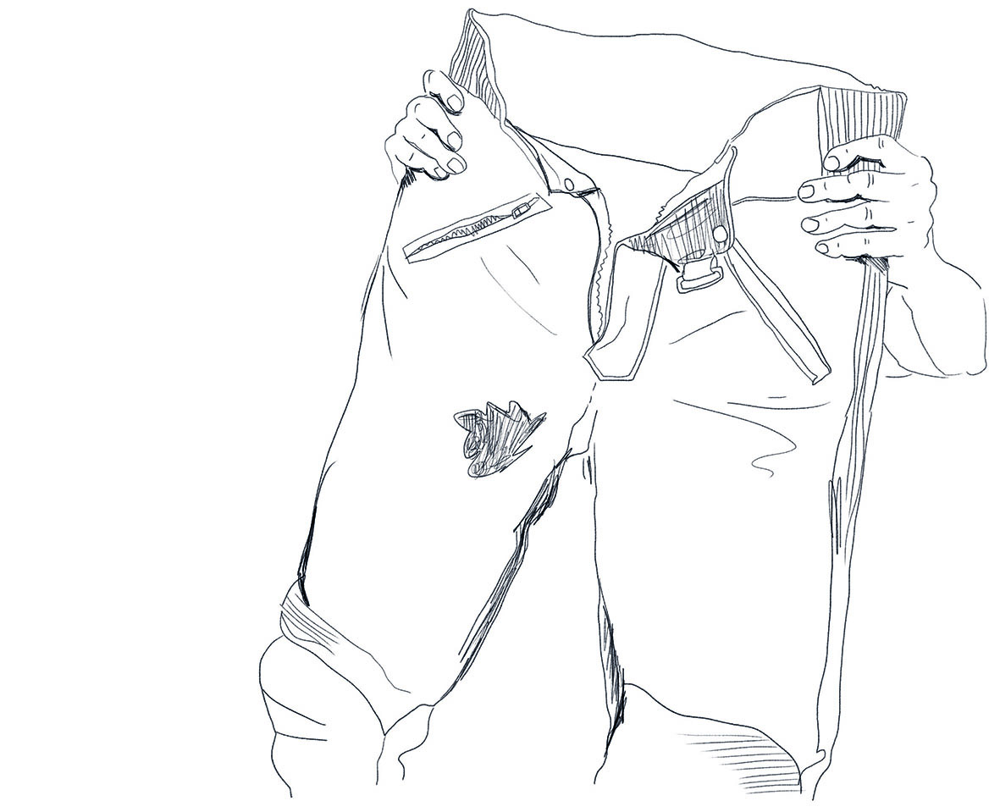

Matthew and Dominic was asked to bring an object they found theselves lucky to find.
Dominic
Matthew
So, Matthew, here is my object. They are a pair of leather motorcycle pants, I found them at a cash converters.

Hah 😃
In Collingwood, on Smith Street I think it was. And they were really cheap, 29 bucks. Which normally they would be really expensive.
Matthew: What’s really expensive? 300?
I’d say about 300 and upwards, yeah… I thought; what a bargain. So, I grabbed them even though they are, actually, a size too big. But yeah, they are really thick… leather… they’re real heavy, I’d say. I don’t know, around 2 kilos, 3 kilos…
[Matthew gets a lift] What! FAR OUT! 💪

Do you have qualms about wearing second hand stuff like this? Motorcycle stuff?
Nah.
Because you shouldn’t buy a secondhand helmet?
Nah, I properly wouldn’t buy a secondhand helmet, but these…
Did you clean them? ⁉️
No I didn’t! I actually always think about the old guy, or possibly young guy, who had them before me.
I’ve actually never handled any motorcycle apparel.
So much heavier than I would have thought.
Yeah, but they're sort of worn in, you can see.
Someone Else did the hard work.
Yeah, I don't know. Like all the scuff marks and the zips are broken on the leg.
I got one fixed, but it broke again. So, I used cable ties to keep that shot… But they're just perfect when you're going on a long trip.
Twenty-nine bucks..
And you know, I only wear them three to four times a year. But when I do, when I need them, I've got them there.
So what differentiates when you wear these as compared to whatever else you wear?
Generally, if I'm going on a long trip where I'm like riding all day. On a country road, or a road with traffic then I'll wear these. Yeah, so for a one to two-day trip I always just wear these. Because it's like, they are on and you don't have to think about it.. you know, if you got a pair of jeans on or something, is sort of always in the back of your mind.. If you do crash, you slide down the road and nothing'll happen to you.
All good!
Hopefully. Yeah, I just think they're great. 😀
Did you have a pair before you bought these?
No, I just had a pair of Kevlar jeans. These.. I just like the old-school feel of them.
So you bought them for 29 bucks.. so the guy who cashed them in must have only got, like, 5 or 10 bucks for them!! When you get to your location with something like that, do you take them off?
Yeah, I normally have a pair of jeans in my bag or something like that. Casual clothes. I guess wouldn't want to be wearing them around all the time.
A good find I think. Cash converters. What's different to wearing them to the Kevlar jeans?
These are a bit safer. Padding In the knees and things like that. The Kevlar jeans are real baggy. Like thick. They're uncomfortable to wear; they got a short crotch area, where as these are really long, and they sit up above your hips. So they're really comfortable to wear on a long ride.
Yeah, they looked like they were quite high.
Yes, so they come right up and you can tug all your shirts and stuff in. Then you're actually not getting no wind in, where with the Kevlar jeans.. they're comfortable for an hour and then they're annoying, and feel funny to wear because of the Kevlar lining. It's actually really hot in the Kevlar jeans.
That's the one thing about riding. You must be sweating and getting so hot! 🌡️
Yeah, as soon as you stop, you got to literally take all your jackets off and, you know, it's a downside. You're like, I'll just go for a ride but then you got to put your jacket on and it's 30 degrees. And if you stop moving for like two minutes, stopped at the lights.
Then you see someone bombing down the Monash in a hi vis singlet, haha.
When did you last wear them?
I think when I went to Walhalla. With the guys. It's sort of a long full day's riding there and back. We rode on these winding roads through these little towns… Is it Gippsland, would you say?
Nah, it’s further… It’s way east, isn’t it?
Like past the lakes. It’s really cute little towns. Near Morwell. Like into the mountains from Morwell, but then you can follow the edge of the mountains up. Sort of North, and then there’s all these little cool towns – you’re right in this little old mining town.
It all looks original heritage? I wanted to take Silvia, my girlfriend, there…I haven’t done it yet.
It’s actually epic because you can camp on the river, free camping, inside the town. There’s a grassy spot where you can set up a tent 🏕️ It’s crazy. And yeah, it’s all period buildings.
Yeah – we have to go.
We just camped on the river and went to the pub for dinner. It’s really cool. We actually had a lock-in.
A lock-in, what’s that?
You know, they lock the doors and you just sit around drinking beers at the bar while the pub is shut.
I’ve never heard of that!!
…
…
There’s my object. I’ve got so many knick knacks and bits and pieces. The interesting thing about this was, I probably didn’t really appreciate it until later on.

So what this is, it’s… I don’t even know the actual name of the it. But it’s a little music device. [Spins the little handle and music starts playing 🎵]
It plays a part of the Amelie soundtrack. So, a couple things. I bought this when I was living in Paris and this is just from a touristy souvenir shop in the Latin Quarter. There’s a lot of these little things but there’s not many from this composer… This composer is Yann Tiersen which is one of my favourite composers, and I also love this soundtrack. So, it was really like a double whammy finding this. Like all the things lining up. I almost didn’t buy it. I was a like, it’s just this little thing I don’t really need. But then I got it home, and I love it. It always makes me happy.
Reminds you of the time you were there..
Yeah. And I don’t sit here and do it that often.. it just sits in the cupboard. But when I actually do do it, it still makes me happy.
Yeah, it’s awesome 😀
And I like it because it’s just mechanical. It’s very… what’s the word… It has a lot of craftsmanship into the actual componentry. It’s all prongs and metal. [Playing for a while 🎵]

Why do you like the Amelie soundtrack so much?
I think… uhm, why do I? It has this sort of beautiful sadness about it, a lot of the soundtrack is quite sort of bubbly and happy but then there’s bits that are like really morose and really sad. Like, you can sort of picture yourself looking out the window when it’s grey and raining.
You can just imagine, you know, you’re watching yourself in your own lm clip or something, [starts playing 🎵] oh life… [Smiles] Yeah, but nothing more than that. Like it doesn’t really have any financial value, or it wasn’t cheap or expensive or anything.
It’s a very reflective song isn’t it…
It’s nice because you have to interact with it. It doesn’t do anything unless you do… unless you make the effort… So, probably, it wouldn’t be the first thing I grabbed if my house was burning down, but I’m happy that I’ve got it.
How many years ago was it?
I was there at the end of 13.. for two months. My time in Paris at that time was very… I was a little bit… like it was fun, but I was on my own. I went over for a photography thing that wasn’t what I expected. And then I was waiting to catch up with my old girlfriend, but she couldn’t meet up till January. So, I was in Paris killing time.
So, you were there totally… didn’t know a single person yet?
I knew a few people here and there just from travelling. I was staying with one friend at the beginning and that was really great. Then I moved in to my own place. And the house mates were all away because it was Christmas holidays, so I had this big apartment, three bedrooms, all to myself. And I was just sitting there.
So you really explored Paris while you were there I bet?
I did a lot, like I was always on the city bikes, riding around, went to every cafe, ate out a lot.
You reckon you could live there?
[Prompt] Nah.
I could go back for a specific project, if you knew you'd be going there for three months or six months. But just to go and live in Paris, indefinitely, I don't think so.
…
…
Do you think you've got like a similar object to this, like another object that reminds you of another trip?
Yeah, I probably do. In my early days I used to collect like a postcard from every place, so I've got this huge postcard collection.
And I used to have it on my wall. It Was just like a whole wall of postcards from all the towns I've been to. That was my thing. Like I'd really got out of my way to try and find a postcard from that place. And I like that I've got it, but I just try to condense what I collect and save and keep now.
A lot of the time as well, it's just nice when you pick it up later, it sorts of prompts you to reflect on that moment. It doesn't actually have to be of any use other than a memory jogger. 🏃